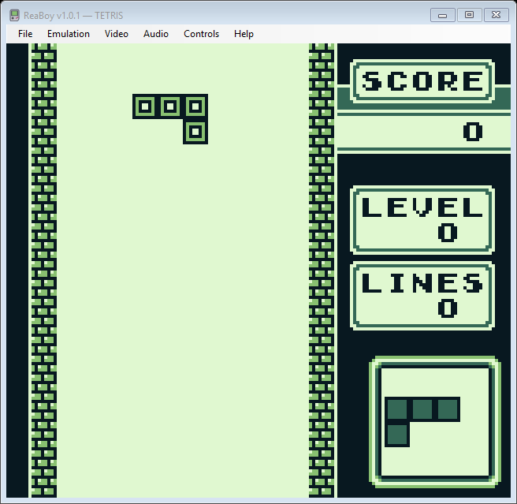
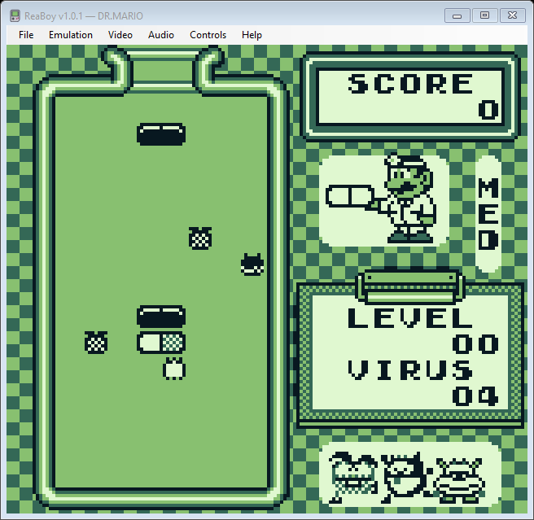
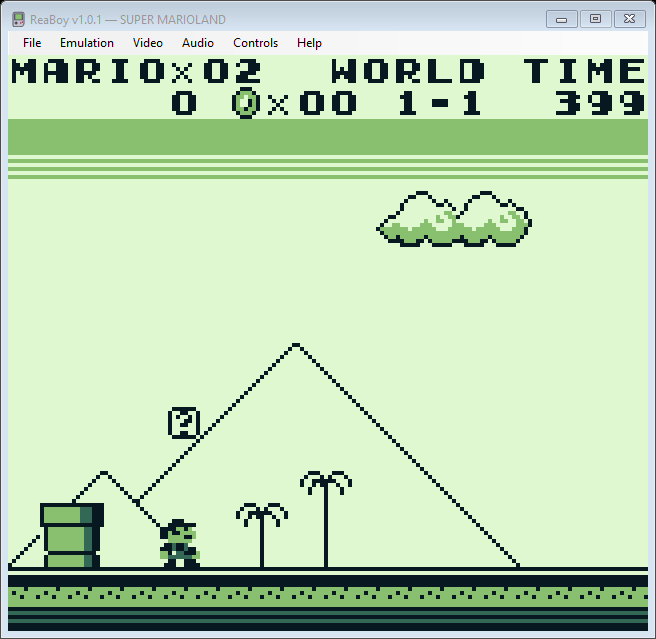

Every pixel in place.
Fixed window sizes, integer scaling, fullscreen, and classic green or grayscale palettes.
WINDOWS x64 · STANDALONE
The original Game Boy experience in one clean Windows app. Crisp pixels, four-channel sound, and the games you remember.
No .NET install. No admin rights. Open-source boot firmware included.
Bring your own game ROMs.
READY, SET, PLAY
Run this in Windows PowerShell. It downloads the latest ZIP, verifies its SHA-256 checksum, installs for your user, and adds ReaBoy to the Start menu.
Already installed? Your settings, saves and existing firmware are preserved.
curl.exe -fsSL https://raw.githubusercontent.com/ScientificBrad/ReaBoy/main/install.ps1 -o "$env:TEMP\ReaBoy-install.ps1"; if ($LASTEXITCODE -eq 0) { powershell.exe -NoProfile -ExecutionPolicy Bypass -File "$env:TEMP\ReaBoy-install.ps1" }Read the installerInstalls to %LOCALAPPDATA%\Programs\ReaBoy
ACTUAL EMULATOR CAPTURES
Real screenshots from ReaBoy v1.0.1.
Games shown for compatibility demonstration.



JUST THE GOOD STUFF
Fixed window sizes, integer scaling, fullscreen, and classic green or grayscale palettes.
Open a ROM or drag one in. Reset, pause, remove cartridges, and revisit your recent games.
Game Boy pulse, wave and noise channels. Volume control, mute, and stable native audio output.
Configure two keys per Game Boy button, or stick with familiar arrow keys and Z/X.
MBC1 battery-backed RAM is saved when changing games or exiting. Settings persist between sessions.
Bootix DMG v1.2 is included under CC0. The original Nintendo firmware is optional and is not distributed.
DEFAULT CONTROLS
BEFORE YOU DOWNLOAD
ReaBoy targets monochrome Game Boy games with ROM-only or MBC1 cartridges. It does not yet support Game Boy Color-only games, MBC3/MBC5, link cable or save states.
Exact hardware timing and broad game compatibility are not certified. Fast forward targets 3× speed and intentionally mutes audio.
Commercial game files are not included. Bootix is a licensed replacement, not a Nintendo firmware dump.